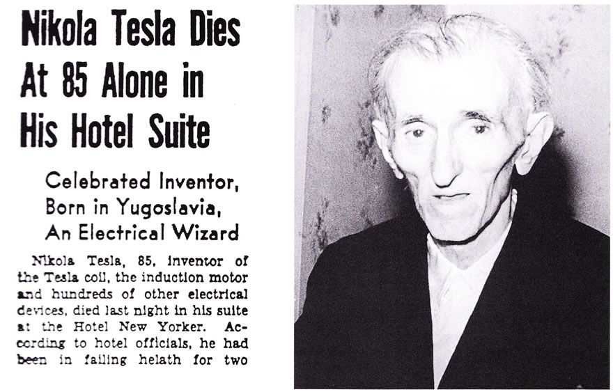

Le décès de Nikola Tesla le 7 janvier 1943 a marqué la fin d'une vie bien remplie, marquée par des découvertes et des inventions remarquables. Bien que les causes exactes de sa mort restent inconnues, il est clair que Tesla a laissé derrière lui un héritage durable qui continue de nous inspirer aujourd'hui. Les avancées de Tesla en matière d'énergie électromagnétique, d'énergie libre et de communication sans fil ont changé le cours de l'histoire et continuent d'influencer notre monde moderne. En fin de compte, Tesla a laissé une empreinte indélébile sur l'histoire de la science et de l'innovation, prouvant que le génie et la détermination peuvent transcender les époques.
Son décès
Tesla est décédé le 7 janvier 1943 à l'hôtel New Yorker à New York. Les causes exactes de sa mort restent inconnues, mais il est probable qu'il ait succombé à une crise cardiaque. Après son décès, la plupart de ses effets personnels ont été confisqués par le gouvernement américain pour des raisons de sécurité nationale.
 Conclusion
Conclusion
Nikola Tesla a laissé derrière lui un héritage durable qui continue d'inspirer les gens aujourd'hui. Sa vision de l'énergie électromagnétique, de l'énergie libre et de la communication sans fil ont façonné notre monde moderne. De plus, Tesla a été honoré de nombreuses façons, notamment par la nomination de l'unité de mesure du champ magnétique en son nom et par l'adoption du "mode Nikola Tesla" dans les véhicules Tesla. En outre, il a inspiré de nombreux auteurs de science-fiction, témoignant ainsi de sa portée visionnaire.
- En 1960, l'unité de mesure du champ magnétique, le tesla, a été nommée en l'honneur de Nikola Tesla en reconnaissance de ses travaux dans le domaine de l'électromagnétisme.
- En 2013, Elon Musk, PDG de Tesla Motors, a annoncé que tous les véhicules Tesla seraient équipés d'un "mode Nikola Tesla", qui permet de régler le système de suspension pour une meilleure conduite sur les routes cahoteuses.
- Nikola Tesla a inspiré de nombreux auteurs de science-fiction, notamment H.G. Wells et Arthur C. Clarke.

Nikola Tesla
La plupart des personnes sont tellement absorbés dans la contemplation du monde extérieur qu'ils sont totalement inconscients de ce qui se passe en eux-mêmes. La mort prématurée de millions de personnes est principalement liée à cette cause. Même parmi ceux qui exercent leur attention, c'est une erreur commune pour éviter l'imagination et ignorer les dangers réels. Et ce qui est vrai d'un individu s'applique aussi, plus ou moins, à un peuple dans son ensemble.
Les créateurs de ce site dédié à Nikola Tesla : Messai Koussaila et Sene Mamadou.